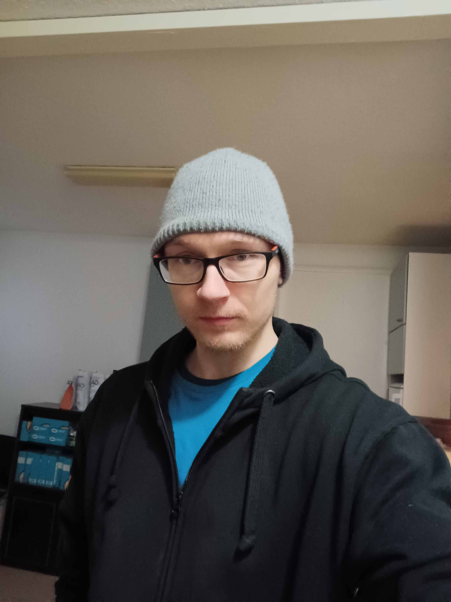
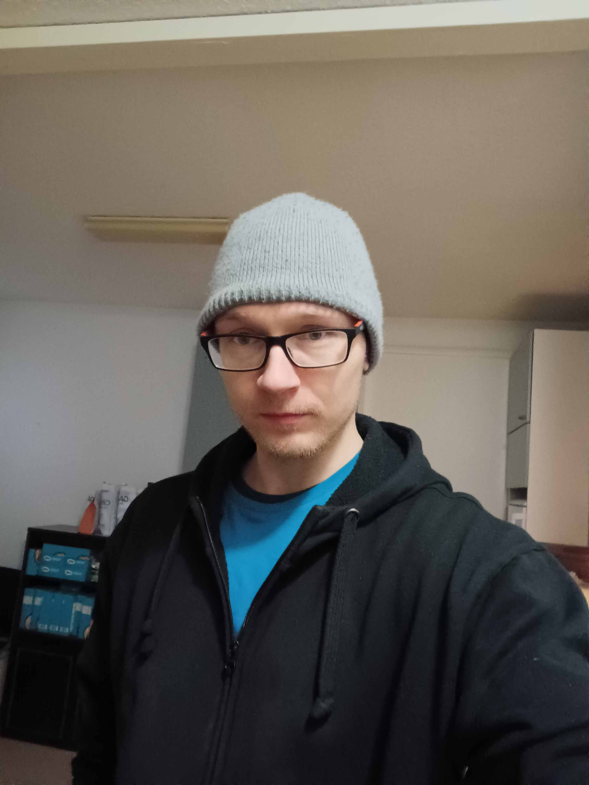

About me
 


Who am I?
Hey, my name is Joni. I'm a male, 32 years old. Currently I'm unemployed and trying to find work. In the meantime I'm practicing my coding skills and planning on starting my own business one day.
I graduated from University of Jyväskylä in 2019, with three master's degrees in my pocket, and a couple of years later I ended up in Ilomantsi where I was working as a sports secretary in the municipality of Ilomantsi. I guess I'm lucky for having been able to work in a job that fits my education, but now I'm unemployed asf.
Working as a sports secretary wasn't too bad - I got to make a difference in local community and arrange sporting events and organize youth and sports activities according to my best judgment. At times secretarial work can get a bit tedious, stressful and lonely, but I counterbalance that by continuously working on my skills and improving my knowledge and staying active on my current field of expertise. I could see myself working in a whole different field in the future, though.
I'm a nerd who's into all sorts of things. I like to read books, play computer and console games, lift weights, build computers and learn to code. I'm still trying to figure out what to do with my life, but right now I'm focused and dedicate several hours to coding each day. Coding is honestly really hard, but I like the feeling of how I can get absorbed in it. I would gladly get rid of all the moments when I run into issues and can't find an explanation for errors (nothing on console, nothing on Stack Overflow, ChatGPT is clueless etc.) I would never study coding in a school or university - for me coding is a way to test and push my limits and get into new things without a fear of failure.
Coding reminds me of the times when I was still in university, but I find it more enjoyable than studying in school. I never enjoyed the rigid structures and customs of university so compared to that coding feels like I can do whatever I want, and the only opponent that I have is my weak skills. I could see myself working in software industry in the future, but who knows? I'm taking baby steps each day, comparing myself to who I was yesterday and before that and aim to be a better version of myself each day.
I didn't always think this way. When I was younger, I felt like I knew who I was and what kind of person I was. When I was in high school I was sure I wasn't interested in philosophy. Now I have a master's degree in philosophy. Then later when I was in university I thought I would never ever work in municipal administration and had no interest in it. At some point my perspective turned 180 degrees and I realized that sports administration is actually more solid than anything else in sports sciences.
What I want to say is that life isn't always linear. Most of us have to spend the majority of our time doing mundane tasks, such as eating, sleeping, working and socializing with friends and family. Mundane tasks keep us in place and not much changes. Then, if you want change your life, for one reason or another, you might decide to improve and work on things that you find valuable and meaningful. You dedicate your willpower and a lot of your time into it. Most of that time is also wasted, because it is not directly advancing your goals no matter how hard you work. (Also if you're learning to code, you probably waste too much of your time on problemsolving and pointless tutorials.) No matter how hard you focus on streamlining your actions, the most probable outcome is a change in yourself, but not the kind you were hoping or expecting.
Taking action is the only way to change, though, and it's a slim chance that we would always succeed and get what we want, but focusing on the journey is usually enough to make our lives a bit better and feel like the things we do are meaningful and moving forward. Put a couple of hours into something you want to achieve each day and let the process take care of the rest.
Um, what else? Well, I'm an introverted, calm and focused person. I have one degree from philosophy so occasionally I sound like a philosopher and can be argumentative. I like philosophy but I don't like those who call themselves philosophers, those who teach philosophy in universities, those who have no experience of empirical study, lack any connection to real life and comment every insignificant phenomenon or piece of news like a goddamn prophet. In that sense I quite frankly despise how low contemporary philosophy has gotten, but I still think it's one of the greatest things to get to know and learn if you want to expand your knowledge and understanding of different ideas.
One person that I knew years ago told me that I'm an observer - I tend to watch and react only after I've thought things through. Admittedly she was right. I'm an introvert after all but I've always seen it as a positive. I can be socially adept under right circumstances. I have my patience with stupidity, but I'm not going to tag along for long when I get bored or when people test me with their drama and stupid remarks.
In life I try to be courageous, meet new people, try new things and venture in new projects in order to counterbalance my natural introvertedness.
Coding stack
For front-end development I am using HTML, CSS and Javascript, and for back-end development I am using mainly PHP and Node.js. My coding stack reflects the fact that I had to learn these technologies in order to be able to use them in my projects. I think PHP is still one of the best languages for backend development, because it's very easy to use. If I had to choose two most useful languages for setting up websites fast, then I'd say PHP and Javascript are my first recommendations.
I addition to previously mentioned I am also familiar with these common technologies and frameworks:
- Wordpress
- Bootstrap
- Git
- SQL
- React.js
Here's my take on AI and using AI tools: AI is a useful tool. I'm willing to take whatever help I can get. Coding purists easily forget that coding itself is a means to an end. If AI can help me get better, then why not use it?
I realize that coding is an activity where syntax needs to be learned thoroughly, and I respect those who fight against cheap tricks of using AI tools instead of learning things, but I have to say that I would not be here today without AI. AI pushes me forward, and I know that I have to be better than it if I want to develop as a developer. All my projects require me to be better than AI so I have no worries that I would rely too much on it. I know that I'm the loser if I can't control it. But when I control it, I can push myself to learn things that I would not be able to learn otherwise. Instead of fearing AI, we should embrace all the possibilities that it's granting us. AI is only a tool, so it can't solve my problems for me and it certainly can't finish my projects.
What is the best way to improve skills as a developer? It is to take on hard projects and finish them every time.
Education
- Master of Sports Sciences; 2018; Social Sciences of Sport
- Specialisation in Sports administration and sports planning
- Master of Social Sciences, 2018, 2019; Philosophy, Sociology
- Statistics, theoretical studies, logic, statistical analysis, argumentation
Work Experience
- Sports Secretary
-
Administrative work: contracts with land owners and different associates, team supervising,
invoices & billing, planning and management of sport events, co-operation and co-ordination with stakeholders
- Sales agent
- During these years I was working for Suoramarkkinointi Mega and Enia, both of which operate in telemarketing business. For Mega I was selling electricity contracts and Car Union memberships. For Enia I was selling different products of Elisa (Finnish mobile phone operator), including cell phone plans and internet plans.